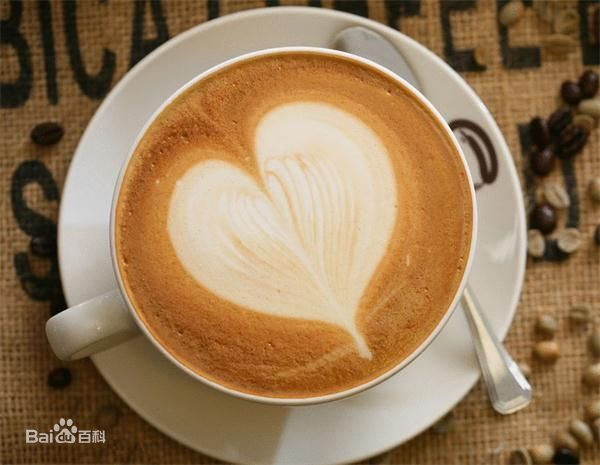

来杯咖啡吗？

拿铁
“拿铁”不是咖啡其实，拿铁（Latte）在意大利语里是“牛奶”的意思，如果你点一杯“拿铁”，
那么服务生只会给你上一杯牛奶。而意大利语的Caffè Latte指的才是拿铁。现在很多冷饮店
都会推出自己的“拿铁”系列，像“红茶拿铁”“抹茶拿铁”等等，其实就是奶茶而并没有咖啡的成
分。拿铁咖啡是意大利浓缩咖啡(Espresso)与牛奶的经典混合，意大利人也很喜欢把拿铁作
为早餐的饮料。意大利人早晨的厨房里，照得到阳光的炉子上通常会同时煮着咖啡和牛奶。喝
拿铁的意大利人，与其说他们喜欢意大利浓缩咖啡，不如说他们喜欢牛奶，也只有Espresso才
能给普普通通的牛奶带来让人难以忘怀的味道。